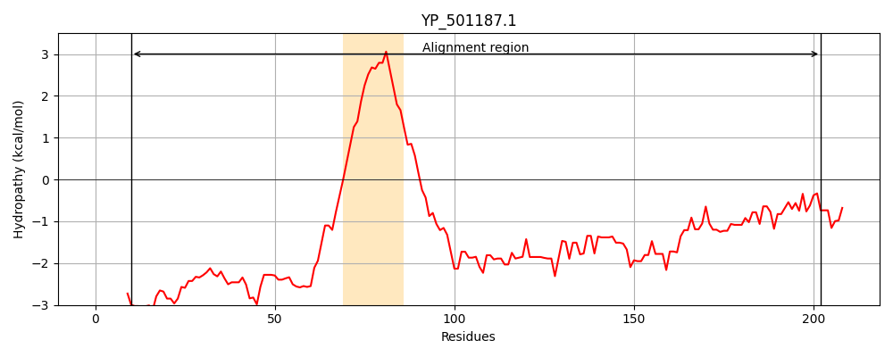
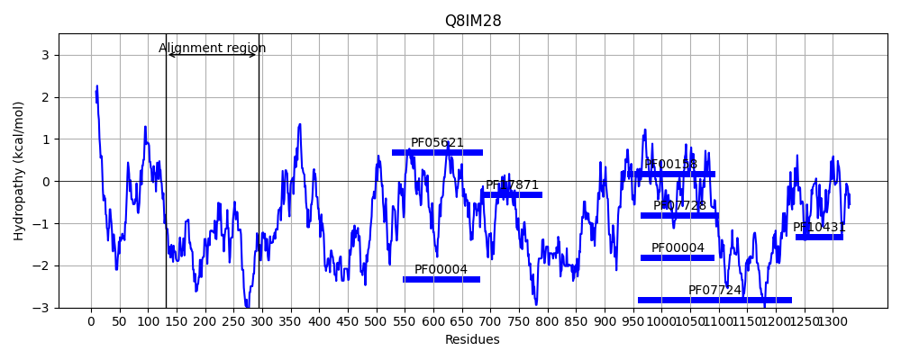
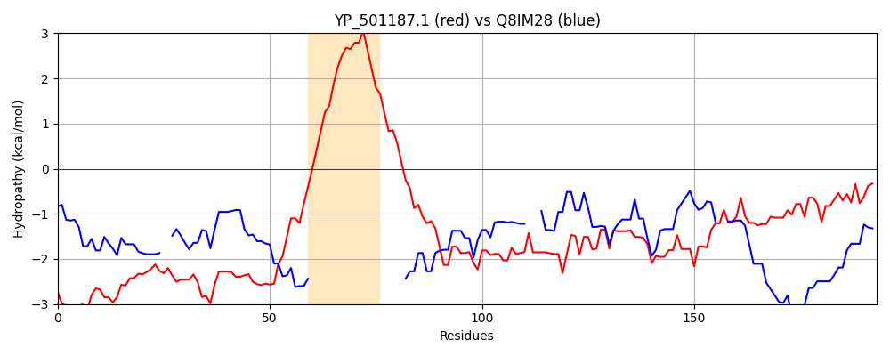

Hit Accession: Q8IM28
Hit TCID: 3.A.26.1.1
Hit Description: gnl|BL_ORD_ID|16372 gnl|TC-DB|Q8IM28|3.A.26.1.1 ATP-dependent CLP protease, putative OS=Plasmodium falciparum (isolate 3D7) GN=PF14_0063 PE=4 SV=1
Mach Len: 193
e:0.000001
Query TMS Count : 1
Hit TMS Count: 0
TMS-Overlap Score: 0.000000
Predicted Substrates:CHEBI:8526;protein polypeptide chain
BLAST Alignment:
Score: 115 , Bit scores: 48 bits, E-value: 7.1e-07, Alignment length: 193, Percentage identity: 21
Query: 10 SYQYDNQNQNHRRQSEDASYRQQYAKGDPEEHPERYYNGRDYRREQILEEENEKSRRSKKWLYIIIAILLIIVAIFVTRALLNNDSDKVSNDPKVSQNYKKQVENQDGQINQQVDNAKENIKNNQKTDDIIKNLQNQIDNLKQQEQNKADSKLTQFYQDQINKLTEANNALKNNASQGKIESMLNDINTKFDS 202
S Y N N H E + Q + +E + + IL EE+E ++K N++ V+ + V++N + + + +N D +++K+ ++ +I+KNL N+ DN + N D + N +T+ NN NN + + N+++T DS
Sbjct: 131 SKSYTNSNNGHNNIYEQSGSAQNNL--NEQEKKNISLTNEEIDMKNILNEEDENQVENRK----------------------QNENGNVNGNGNVNENVNENINENEKLLN---DFINKHLKDMEEKINILKNLNNEEDNASLDDINNKDYIINDI--SSSNNITKENNNNNNNNNNNNDKGNFNNLDTNNDS 294 | Protein Hydropathy Plots: |
|---|
|  |  |
Pairwise Alignment-Hydropathy Plot:
|
|---|
|  |